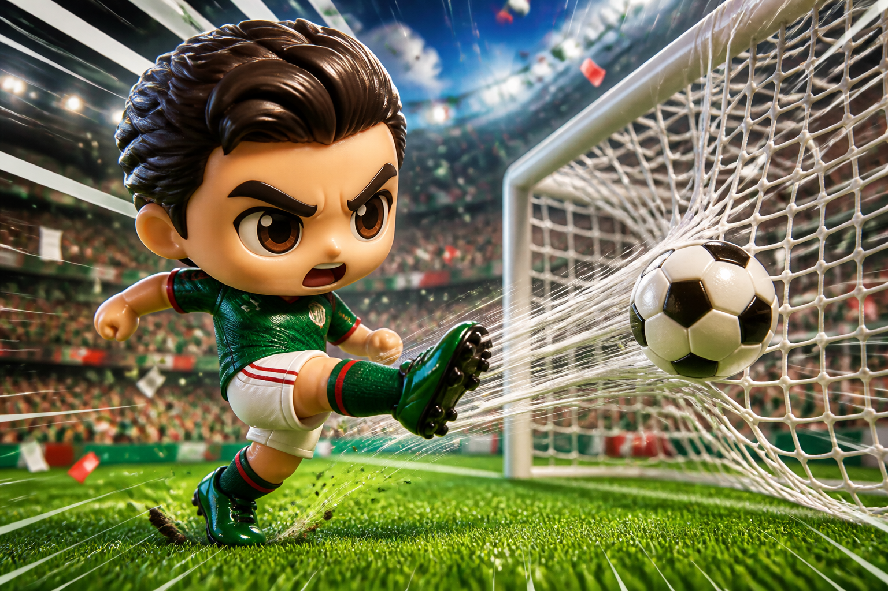
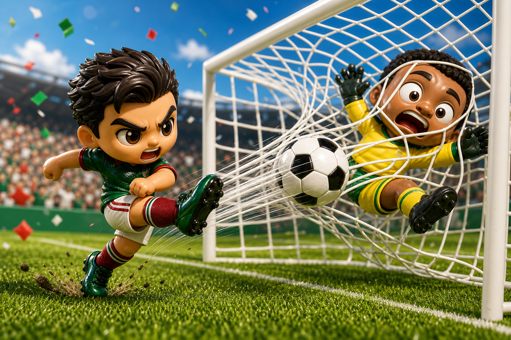

頭條
墨西哥開幕戰補時絕殺，南非防線最後一刻失守
在滿場噪音裡，墨西哥用邊路壓迫撐過下半場的體能斷點，終場前靠禁區外二次進攻完成致命一擊。 南非一度把比分扳平，但最後五分鐘連續退守，讓主隊把整份開幕日報紙的頭條搶走。
墨西哥
2
:
1
南非
模擬賽程專刊 · 漫畫報紙版 · 開幕日四場完整賽果
在滿場噪音裡，墨西哥用邊路壓迫撐過下半場的體能斷點，終場前靠禁區外二次進攻完成致命一擊。 南非一度把比分扳平，但最後五分鐘連續退守，讓主隊把整份開幕日報紙的頭條搶走。


補時破網墨西哥 90+2 分鐘遠射折射入網，拿下開幕勝。
韓國先靠反擊得手，捷克下半場用高球轟炸追平。
加拿大開局就拉高節奏，兩翼速度把比分快速拉開。
瑞士中場壓迫穩定收割，兩記定位球讓比賽提前定調。
第 73 分鐘，韓國右路一次斜插幾乎撕開捷克防線，門前補射卻被守門員單掌托出。 這球沒有改寫比分，卻讓比賽從戰術棋局突然變成漫畫分鏡：汗水、鏟球、怒吼，以及看台上同時抱頭的兩邊球迷。
主播在重播室直接喊破音：邊路一開，後衛只能追背號。
主播抱著手套復盤：這一掌把一分硬生生從門線拖回來。
主播看完香蕉球路線圖，只能沉默三秒再說：牆真的歪了。